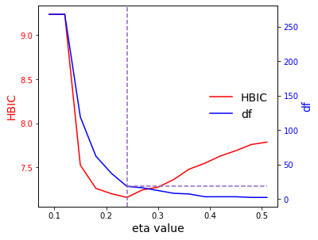

TFRE package¶
TFRE.TFRE module¶
A Tuning-free Robust and Efficient (TFRE) Approach to High-dimensional Regression
- class TFRE.TFRE.TFRE[source]¶
A class used to perform TFRE regrssions
- Returns:
model (TFRE.model class) – The class used to record the regression details.
TFRE_Lasso (TFRE.Lasso class) – The class used to record the results of the TFRE regrssion with Lasso penalty.
TFRE_scad (TFRE.SCAD class) – The class used to record the results of the TFRE regrssion with SCAD penalty.
Noneifsecond_stageis notscad.TFRE_mcp (TFRE.MCP class) – The class used to record the results of the TFRE regrssion with MCP penalty.
Noneifsecond_stageis notmcp.
- class Lasso(beta_TFRE_Lasso, tfre_lambda)[source]¶
a class used to record the results of the TFRE regrssion with Lasso penalty.
- Returns:
beta_TFRE_Lasso (np.ndarray([p+1,])) – The estimated coefficient vector of the TFRE Lasso regression. The first element is the estimated intercept.
tfre_lambda (np.ndarray([1,])) – The estimated tuning parameter of the TFRE Lasso regression.
- class MCP(Beta_TFRE_mcp, df_TFRE_mcp, eta_list, hbic, min_ind)[source]¶
a class used to record the results of the TFRE regrssion with MCP penalty.
Noneifsecond_stageis notmcp.- Returns:
Beta_TFRE_mcp (np.ndarray([k,p+1])) – The estimated coefficient matrix of the TFRE MCP regression. The diminsion is k x (p+1) with the first column to be the intercepts, where k is the length of
eta_listvector.df_TFRE_mcp (np.ndarray([k,])) – The number of nonzero coefficients (intercept excluded) for each value in
eta_list.eta_list (np.ndarray([k,])) – The tuning parameter vector used in the TFRE MCP regressions.
hbic (np.ndarray([k,])) – A numerical vector of HBIC values for the TFRE MCP model corresponding to each value in
eta_list.eta_min (float) – The eta value which yields the smallest HBIC value in the TFRE MCP regression.
beta_TFRE_mcp_min (np.ndarray([p+1,])) – The estimated coefficient vector which employs
eta_minas the eta value in the TFRE MCP regression.
- class SCAD(Beta_TFRE_scad, df_TFRE_scad, eta_list, hbic, min_ind)[source]¶
a class used to record the results of the TFRE regrssion with SCAD penalty.
Noneifsecond_stageis notscad.- Returns:
Beta_TFRE_scad (np.ndarray([k,p+1])) – The estimated coefficient matrix of the TFRE SCAD regression. The diminsion is k x (p+1) with the first column to be the intercepts, where k is the length of
eta_listvector.df_TFRE_scad (np.ndarray([k,])) – The number of nonzero coefficients (intercept excluded) for each value in
eta_list.eta_list (np.ndarray([k,])) – The tuning parameter vector used in the TFRE SCAD regressions.
hbic (np.ndarray([k,])) – A numerical vector of HBIC values for the TFRE SCAD model corresponding to each value in
eta_list.eta_min (float) – The eta value which yields the smallest HBIC value in the TFRE SCAD regression.
beta_TFRE_scad_min (np.ndarray([p+1,])) – The estimated coefficient vector which employs
eta_minas the eta value in the TFRE SCAD regression.
- coef(s)[source]¶
Extract coefficients from a fitted
TFREclass.- Parameters:
s (str, optional) – Regression model to use for coefficient extraction. Should be one of
"1st"and"2nd".- Returns:
The coefficient vector from the fitted
TFREclass, with the first element as the intercept.- Return type:
np.ndarray([p+1,])
Notes
If
second_stage = None,scannot be"2nd". Ifsecond_stage = Noneands = "2nd", the function will return the coefficient vector from the TFRE Lasso regression. Ifsecond_stage = "scad"or"mcp", ands = "2nd", the function will return the coefficient vector from the TFRE SCAD or MCP regression with the smallest HBIC.Examples
>>> import numpy as np >>> from TFRE import TFRE >>> n = 100 >>> p = 400 >>> X = np.random.normal(0,1,size=(n,p)) >>> beta = np.append([1.5,-1.25,1,-0.75,0.5],np.zeros(p-5)) >>> y = X.dot(beta) + np.random.normal(0,1,n) >>> >>> obj = TFRE() >>> obj.fit(X,y,eta_list=np.arange(0.09,0.51,0.03)) >>> >>> obj..coef("1st")[:10] array([-0.12943468, 1.21390299, -0.82102807, 0.56632981, -0.20740154, 0. , 0. , 0. , 0. , 0. ]) >>> obj..coef("2nd")[:10] array([-0.13552865, 1.63426996, -1.13200778, 1.1699545 , -0.47397631, 0.17350995, 0. , 0. , 0. , 0. ])
- est_lambda(X=None, alpha0=0.1, const_lambda=1.01, times=500)[source]¶
Estimate the tuning parameter for a TFRE Lasso regression given the covariate matrix X.
- Parameters:
X (np.ndarray([n,p])) – Input matrix of the regression.
alpha0 (float, optional, default = 0.1) – The level to estimate the tuning parameter.
const_lambda (float, optional, default = 1.01) – The constant to estimate the tuning parameter, should be greater than 1.
times (int, optional, default = 500) – The size of simulated samples to estimate the tuning parameter.
- Returns:
The estimated tuning parameter of the TFRE Lasso regression given X.
- Return type:
float
Examples
>>> import numpy as np >>> from TFRE import TFRE >>> n = 100 >>> p = 400 >>> X = np.random.normal(0,1,size=(n,p)) >>> obj = TFRE() >>> obj.est_lambda(X) [0.43150559039112646]
- fit(X=None, y=None, alpha0=0.1, const_lambda=1.01, times=500, incomplete=True, const_incomplete=10, thresh=1e-06, maxin=100, maxout=20, second_stage='scad', a=3.7, eta_list=None, const_hbic=6)[source]¶
Fit a TFRE regression model with Lasso, SCAD or MCP regularization.
- Parameters:
X (np.ndarray([n,p])) – Input matrix of the regression.
y (np.ndarray([n,])) – Response vector of the regression.
alpha0 (float, optional, default = 0.1) – The level to estimate the tuning parameter.
const_lambda (float, optional, default = 1.01) – The constant to estimate the tuning parameter, should be greater than 1.
times (int, optional, default = 500) – The size of simulated samples to estimate the tuning parameter.
incomplete (bool, optional, defaule =
True) – IfTrue, the Incomplete U-statistics resampling technique would be applied in computation. IfFalse, the complete U-statistics would be used in computation.const_incomplete (int, optional, default = 10) – The constant for the Incomplete U-statistics technique. If ` incomplete = TRUE`,
const_incompletex n samples will be randomly selected in the coefficient estimation.thresh (float, optional, default = 1e-6) – Convergence threshold for QICD algorithm.
maxin (int, optional, default = 100) – Maximum number of inner coordiante descent iterations in QICD algorithm.
maxout (int, optional, default = 20) – Maximum number of outter Majoriaztion Minimization step (MM) iterations in QICD algorithm.
second_stage (str, optional, default =
"scad") – Penalty function for the second stage model. One of"scad","mcp"and"none".a (float, optional, default = 3.7, suggested by Fan and Li (2001)) – an unknown parameter in SCAD and MCP penalty functions.
eta_list (float, optional, default = 3.7, suggested by Fan and Li (2001)) – A numerical vector for the tuning parameters to be used in the TFRE S CAD or MCP regression. Cannot be
Noneifsecond_stage = "scad"or"mcp".const_hbic (int, optional, default = 6) – The constant to be used in calculating HBIC in the TFRE SCAD regression.
- Returns:
self – a fitted
TFREclass with attributes “model”, “TFRE_Lasso”, “TFRE_scad” (ifsecond_stage = "scad"), and “TFRE_mcp”(ifsecond_stage = "mcp").- Return type:
object
- class model(X, y, incomplete, second_stage)[source]¶
a class used to record the regression details.
- Returns:
X (np.ndarray([n,p])) – Input matrix of the regression.
y (np.ndarray([n,])) – Response vector of the regression.
incomplete (bool) – If
True, the Incomplete U-statistics resampling technique would be applied in computation. IfFalse, the complete U-statistics would be used in computation.second_stage (str) – Penalty function for the second stage model. One of
"scad","mcp"and"none".
- plot()[source]¶
Plot the second stage model curve for a fitted
TFREclass.- Returns:
This function plots the HBIC curve and the model size curve as a function of the
etavalues used, from a fitted TFRE SCAD or MCP model.- Return type:
Figure
Notes
In the output plot, the red line represents the HBIC curve as a function of
etavalues, the blue line represents the number of nonzero coefficients as a function ofetavalues, and the purple vertical dashed line denotes the model selected with the smallest HBIC.This function cannot plot the object if
second_stage = None.Examples
>>> import numpy as np >>> from TFRE import TFRE >>> n = 100 >>> p = 400 >>> X = np.random.normal(0,1,size=(n,p)) >>> beta = np.append([1.5,-1.25,1,-0.75,0.5],np.zeros(p-5)) >>> y = X.dot(beta) + np.random.normal(0,1,n) >>> >>> obj = TFRE() >>> obj.fit(X,y,eta_list=np.arange(0.09,0.51,0.03)) >>> obj.plot()
- predict(newX, s)[source]¶
Make predictions from a fitted
TFREclass for new X values.- Parameters:
newX (np.ndarray([\(n_0\),p])) – Matrix of new values for X at which predictions are to be made.
s (str, optional) – Regression model to use for prediction. Should be one of
"1st"and"2nd".
- Returns:
The vector of predictions for the new X values given the fitted
TFREclass.- Return type:
np.ndarray([\(n_0\),])
Notes
If
second_stage = None,scannot be"2nd". Ifsecond_stage = Noneands = "2nd", the function will return the predictions based on the TFRE Lasso regression. Ifsecond_stage = "scad"or"mcp", ands = "2nd", the function will return the predictions based on the T FRE SCAD or MCP regression with the smallest HBIC.Examples
>>> import numpy as np >>> from TFRE import TFRE >>> n = 100 >>> p = 400 >>> X = np.random.normal(0,1,size=(n,p)) >>> beta = np.append([1.5,-1.25,1,-0.75,0.5],np.zeros(p-5)) >>> y = X.dot(beta) + np.random.normal(0,1,n) >>> >>> obj = TFRE() >>> obj.fit(X,y,eta_list=np.arange(0.09,0.51,0.03)) >>> >>> newX = np.random.normal(0,1,size=(10,p)) >>> obj.predict(newX,"2nd") array([ 2.61684897, 2.66548778, -0.13456993, -0.67466848, 3.92941648, 1.21428428, -1.66033086, -2.13238483, 0.95340816, -2.32122001])